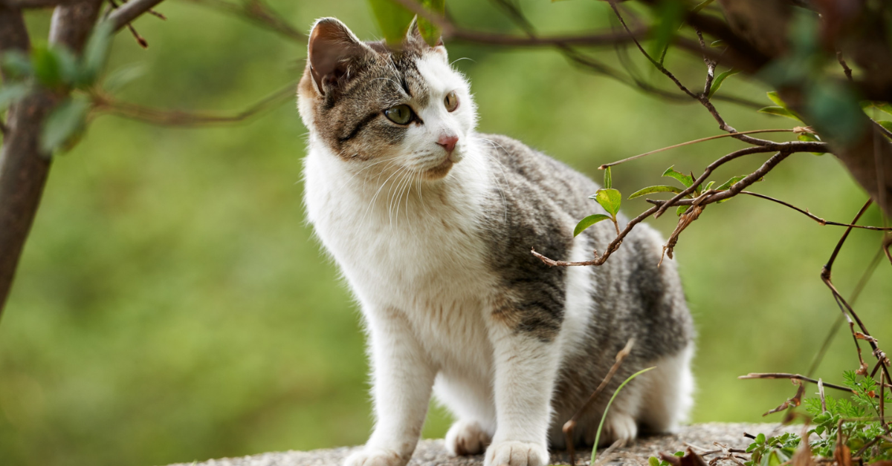

Cuidado integral para mantener a tu mejor amigo feliz y saludable. Consulta Médica Veterinaria: Atención personalizada para prevenir y tratar enfermedades. ¡Tu mascota merece lo mejor! Vacunación y Desparasitación: Protege a tu compañero peludo de enfermedades comunes con nuestro servicio eficaz. Estética y Grooming: Baños, cortes de pelo y uñas, con productos amigables y seguros. ¡Saldrá luciendo increíble! Urgencias Veterinarias: Servicio 24/7 para atender cualquier emergencia. Estamos contigo cuando más lo necesitas. Tienda Especializada: Alimentos, accesorios y medicamentos con recomendaciones de expertos.
La alimentación adecuada es esencial para mantener la salud de tu mascota a lo largo de su vida. Es importante elegir alimentos que se ajusten a sus necesidades específicas, complementados con una rutina de higiene que incluya cepillado del pelaje, cuidado dental y limpieza adecuada. Además, realizar revisiones regulares de sus orejas y cortar sus uñas asegura una higiene integral.
El ejercicio físico y la estimulación mental son claves para el bienestar emocional y físico de tu mascota. Juegos interactivos, paseos y actividades como enseñar trucos o enriquecer su entorno con juguetes ayudan a prevenir problemas de conducta y fortalecen el vínculo entre ambos. Estar preparado para emergencias con un botiquín básico y saber detectar señales de alerta también es fundamental.
Proteger a tu mascota durante condiciones climáticas extremas es crucial para evitar estrés o problemas de salud. En verano, mantener agua fresca y sombra ayuda a prevenir golpes de calor, mientras que en invierno es importante brindarle un refugio cálido. Dedicando tiempo de calidad a interactuar y cuidar de tu mascota, asegurarás una vida plena y feliz para ambos.
